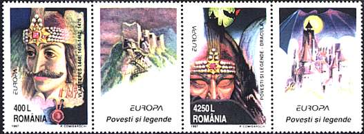
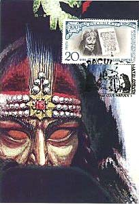
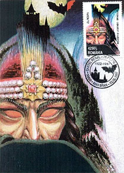
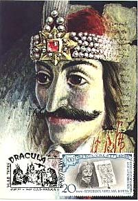
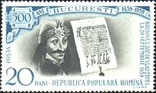
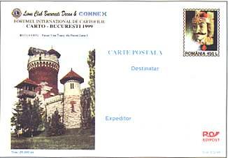
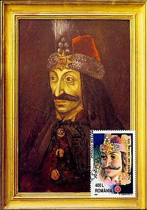
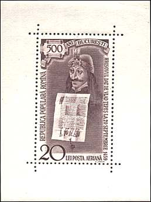
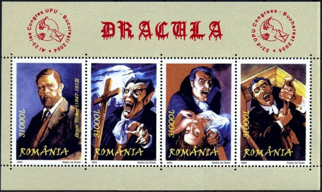
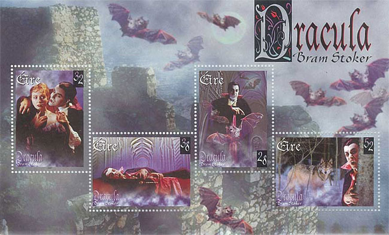

Dracula is a famous character of the writer Bram Stocker (1847-1912), inspired by a Valachian prince of the 15th century. Describing the archetype of a vampire, the Dracula novel, published in 1897, was at the origin of numerous movies, like F. Murnau's "Nosferatu the Vampire (1922), and of those directed by T. Browning (1931) and T. Fisher (1958).
Dracula lived in a castle situated in the middle of Carpathian mountains, in the region of Transilvania. Valachia and Transilvania are parts of Romania, and for this reason the Romanian Postal Administration has issued on May 5, 1997 a set of interesting stamps dedicated to Dracula and to his archetype, the Prince Vlad. The mentioned set was issued as part of a general European postal action, dedicated to "Stories and Legends".

The stamp of 400L shows the portrait of the Prince Vlad and that of 4250L displays an image of the terrific vampire (brrrr!). Both labels show the feared Dracula's castle, where upon the legend the victims quenched the thirst of the vampire with their own blood.
 |
 |
 |
Strangly enough, the young and nice female victims weren't totally innocent, because upon legend the vampire could begin the feast only when his victims agreed to the moods of their preferred blood sucker.
|
 |
 |
The labels display the text: Povesti si legende, meaning Stories and Legends. The whole set was designed by the artist P. Comisarschi. The run was of 120,000 sets, that were issued in sheets of 12 stamps and 8 labels. Please note the big difference in face values of both stamps (practically an one to ten ratio).
The postcard, showing the Vlad Tepes Tower in the Carol I parc of Bucharest, was issued by the Internationa Forum of Postcards Collectors, Bucharest 1999.
 |
Please take
a look at the portrait of the Prince Vlad (known under the name Tepes
= the Impaler), the son of a prince known under an even so nice
name: Vlad Dracul (Vlad the Devil). Vlad Tepes (1431-1476), pronounced
as Tzepesh, has reigned during the years 1448, 1456-1462 and 1476.
Even if he wasn't a vampire, he was renowned for being extremely
cruel. Tepes and the powerful boyars (reach land owners) permanently
fought each other, and very often Tepes' the Impaler enemies finished
their lives quite uncomfortably, on the top of piles. The miniature sheet commemorates the 500th anniversary of the founding by the Prince Vlad of the city of Bucharest, the capital of Romania. The sheet was designed by Serban Zainea. The face value is of Lei 20, and the print run was of only 30'000 pieces. |
 |
A short personal story related to the above sheet. When the sheet appeared in 1959, I was a school boy in Bucharest. I have started with collecting of Romanian stamps just one year earlier and I was advised to begin with the newer stamps, because they usually were less expensive. The Tepes sheet was freely available at face for several years, but it was the most expensive one issued after 1948 by the Romanian postal administration, representing about 2% of the salary of a school teacher. For this reason, I could only dream to have it in my collection. In the meantime I have changed my collecting interests, but nevertheless I have got it (see the proof above)! This happened 25 years later, far away from Romania, when a friend offered it to me as a gift. Of course I could not refuse it. We all know that the patience is the highest quality of a stamp collector, isn't it?

So just wait enough time, and the stamp of your dreams will be graciously offered to you, like the one displayed above, and then shiver!
 |
More Draculas were issued in 1997, as part of the European postal plan "Stories and Legend." The stamp on the left was issued by Great Britain (Scott 1754, SG 1980) and shows Dracula himself; that from the right was issued by Ireland and displays the vampire, approaching a nice victims (Scott 1087, SG 1141). Does the victim look afraid? Not for sure. Anyway she should be a bit more careful in the future (in the hope that she has a future left). |
 |
For more fear, here is the full sheet issued by Ireland in 1997.

And now sleep well and have nice dreams.